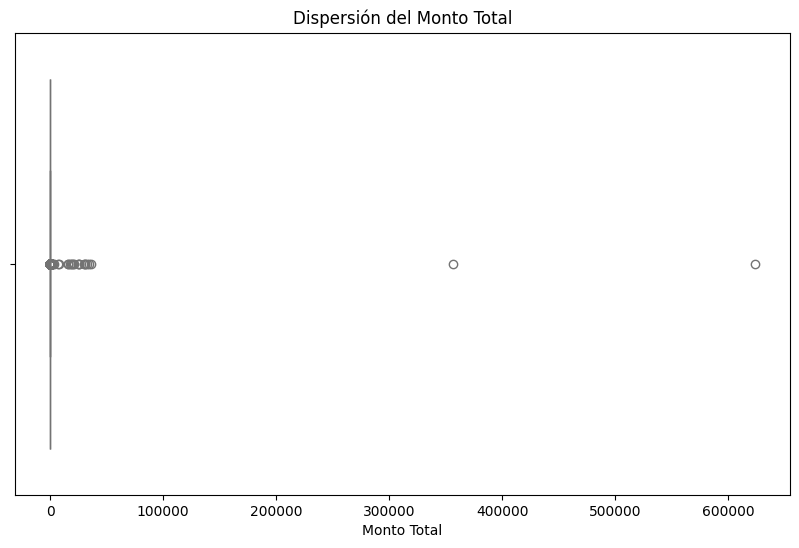
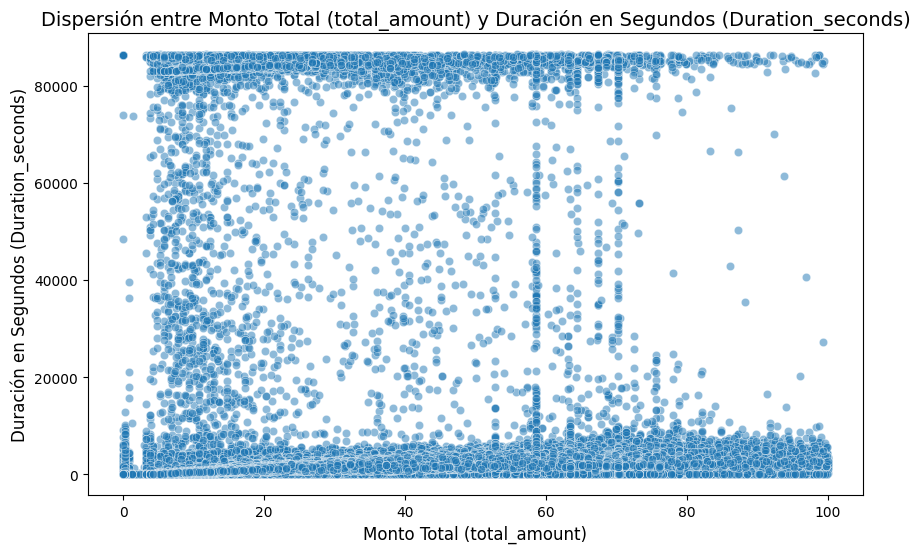
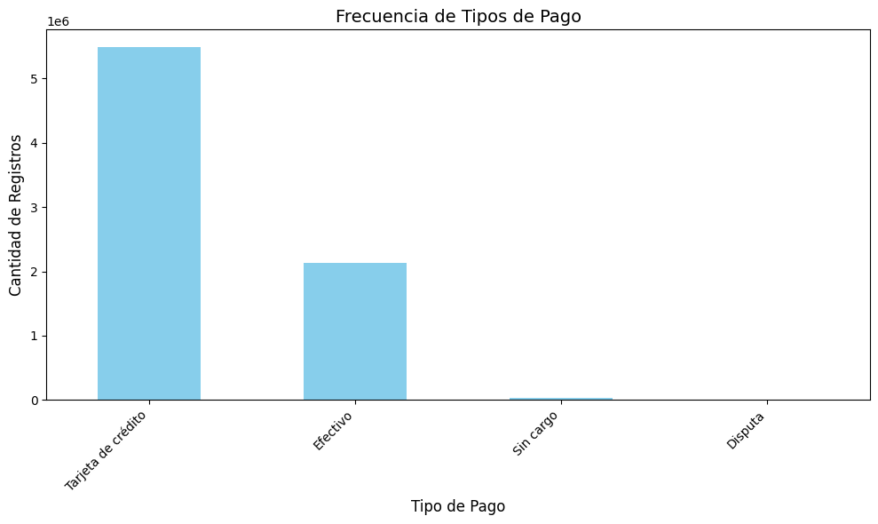
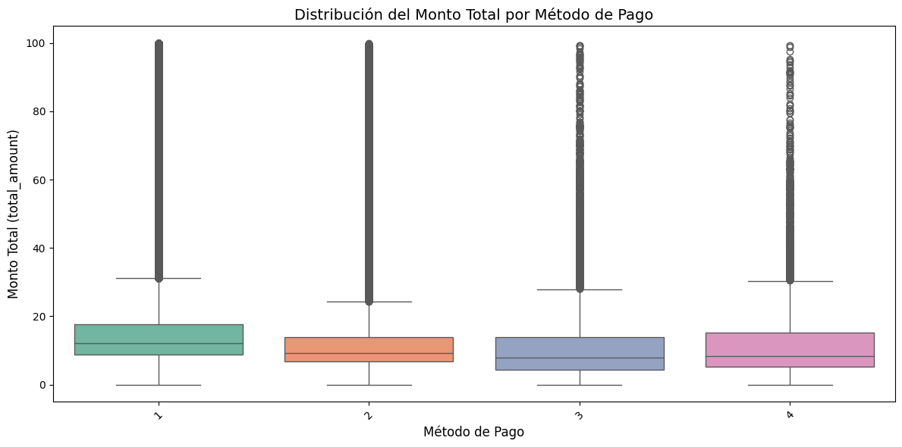
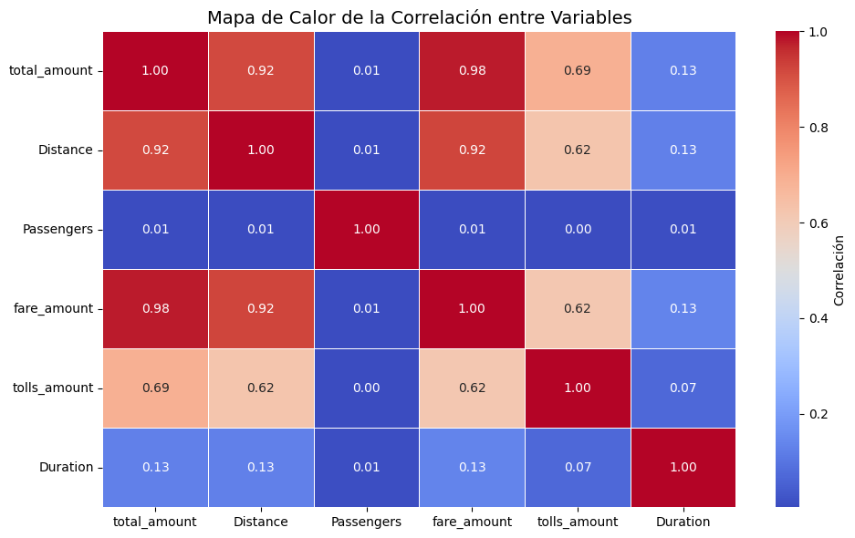
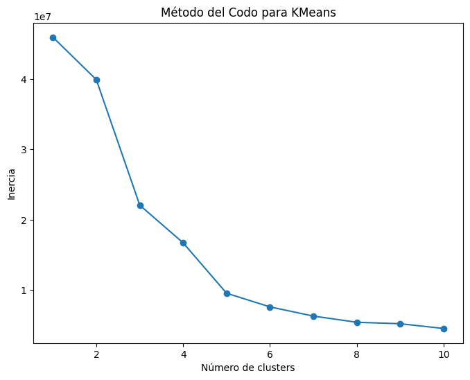
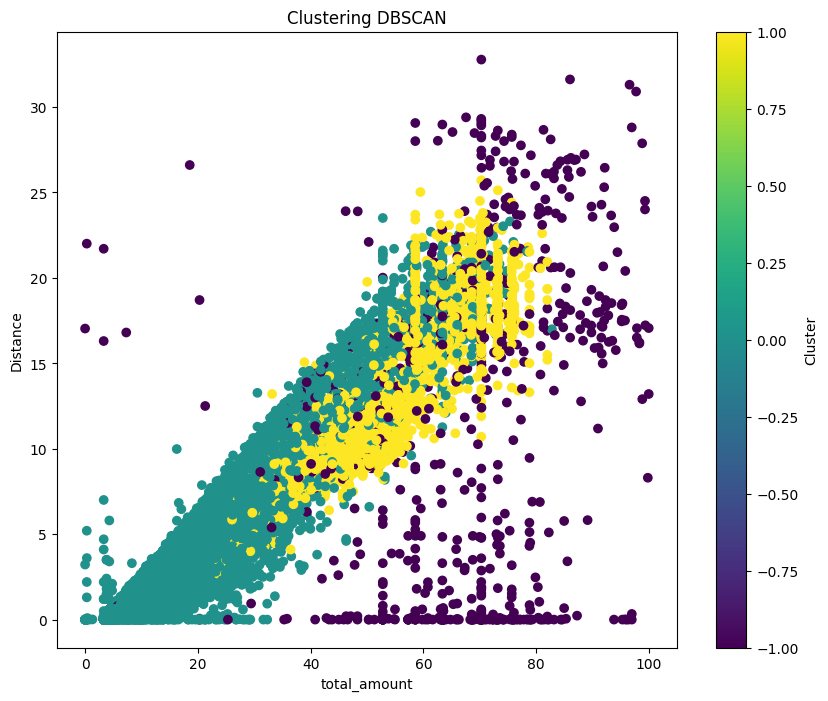

NYC Data#
Importación de las librerías
import pandas as pd
import matplotlib.pyplot as plt
import seaborn as sns
import plotly.express as px
import numpy as np
import geopandas as gpd
import folium
Lectura de datos#
Note
para la lectura de los datos en formato .parquet se instala una extensión de la libreria pandas, tal como se muestra a continuación*pip install pandas fastparquet*
df_taxi = pd.read_parquet(r'C:\Users\PC\Desktop\ML_clase\jbook_ml20251\data\yellow_tripdata_2019-01.parquet')
df_taxi.shape
(7696617, 19)
df_taxi.head(10)
| VendorID | tpep_pickup_datetime | tpep_dropoff_datetime | passenger_count | trip_distance | RatecodeID | store_and_fwd_flag | PULocationID | DOLocationID | payment_type | fare_amount | extra | mta_tax | tip_amount | tolls_amount | improvement_surcharge | total_amount | congestion_surcharge | airport_fee | |
|---|---|---|---|---|---|---|---|---|---|---|---|---|---|---|---|---|---|---|---|
| 0 | 1 | 2019-01-01 00:46:40 | 2019-01-01 00:53:20 | 1.0 | 1.5 | 1.0 | N | 151 | 239 | 1 | 7.0 | 0.5 | 0.5 | 1.65 | 0.00 | 0.3 | 9.95 | NaN | NaN |
| 1 | 1 | 2019-01-01 00:59:47 | 2019-01-01 01:18:59 | 1.0 | 2.6 | 1.0 | N | 239 | 246 | 1 | 14.0 | 0.5 | 0.5 | 1.00 | 0.00 | 0.3 | 16.30 | NaN | NaN |
| 2 | 2 | 2018-12-21 13:48:30 | 2018-12-21 13:52:40 | 3.0 | 0.0 | 1.0 | N | 236 | 236 | 1 | 4.5 | 0.5 | 0.5 | 0.00 | 0.00 | 0.3 | 5.80 | NaN | NaN |
| 3 | 2 | 2018-11-28 15:52:25 | 2018-11-28 15:55:45 | 5.0 | 0.0 | 1.0 | N | 193 | 193 | 2 | 3.5 | 0.5 | 0.5 | 0.00 | 0.00 | 0.3 | 7.55 | NaN | NaN |
| 4 | 2 | 2018-11-28 15:56:57 | 2018-11-28 15:58:33 | 5.0 | 0.0 | 2.0 | N | 193 | 193 | 2 | 52.0 | 0.0 | 0.5 | 0.00 | 0.00 | 0.3 | 55.55 | NaN | NaN |
| 5 | 2 | 2018-11-28 16:25:49 | 2018-11-28 16:28:26 | 5.0 | 0.0 | 1.0 | N | 193 | 193 | 2 | 3.5 | 0.5 | 0.5 | 0.00 | 5.76 | 0.3 | 13.31 | NaN | NaN |
| 6 | 2 | 2018-11-28 16:29:37 | 2018-11-28 16:33:43 | 5.0 | 0.0 | 2.0 | N | 193 | 193 | 2 | 52.0 | 0.0 | 0.5 | 0.00 | 0.00 | 0.3 | 55.55 | NaN | NaN |
| 7 | 1 | 2019-01-01 00:21:28 | 2019-01-01 00:28:37 | 1.0 | 1.3 | 1.0 | N | 163 | 229 | 1 | 6.5 | 0.5 | 0.5 | 1.25 | 0.00 | 0.3 | 9.05 | NaN | NaN |
| 8 | 1 | 2019-01-01 00:32:01 | 2019-01-01 00:45:39 | 1.0 | 3.7 | 1.0 | N | 229 | 7 | 1 | 13.5 | 0.5 | 0.5 | 3.70 | 0.00 | 0.3 | 18.50 | NaN | NaN |
| 9 | 1 | 2019-01-01 00:57:32 | 2019-01-01 01:09:32 | 2.0 | 2.1 | 1.0 | N | 141 | 234 | 1 | 10.0 | 0.5 | 0.5 | 1.70 | 0.00 | 0.3 | 13.00 | NaN | NaN |
Georreferenciación de las zonas de inicio y finalización de la carrera#
Note
se realiza un merge con un archivo externo para obtener las zonas de origen y destino
zonas_df = pd.read_csv(r"C:\Users\PC\Desktop\ML_clase\jbook_ml20251\data\taxi+_zone_lookup.csv")
# Unir el DataFrame de taxis con las zonas usando PULocationID
df_taxi = df_taxi.merge(zonas_df[['LocationID', 'Zone']], left_on='PULocationID', right_on='LocationID', how='left')
# Unir también el DOLocationID para obtener la zona de destino
df_taxi = df_taxi.merge(zonas_df[['LocationID', 'Zone']], left_on='DOLocationID', right_on='LocationID', how='left', suffixes=('_pickup', '_dropoff'))
Show code cell source
# Coordenadas de algunas zonas de recogida y entrega (ejemplo)
pickup_zones_coords = {
'Manhattan Valley': [40.8071, -73.9610],
'Upper West Side South': [40.7850, -73.9750],
'Upper East Side North': [40.7847, -73.9523],
'Queensbridge/Ravenswood': [40.7612, -73.9442],
'Midtown North': [40.7549, -73.9808],
'Sutton Place/Turtle Bay North': [40.7566, -73.9689],
'Lenox Hill West': [40.7661, -73.9630],
'West Chelsea/Hudson Yards': [40.7475, -74.0024],
'Stuy Town/Peter Cooper Village': [40.7311, -73.9790],
'Murray Hill': [40.7450, -73.9819],
'Gramercy': [40.7365, -73.9857],
'Central Harlem': [40.8115, -73.9465],
'Hamilton Heights': [40.8230, -73.9453],
'Greenwich Village North': [40.7375, -73.9987],
'Midtown Center': [40.7550, -73.9850],
'LaGuardia Airport': [40.7769, -73.8737],
'Little Italy/NoLiTa': [40.7223, -73.9963],
'TriBeCa/Civic Center': [40.7168, -74.0070],
'Upper East Side South': [40.7736, -73.9567],
'Yorkville West': [40.7741, -73.9503],
'JFK Airport': [40.6413, -73.7781],
'NV': [40.7038, -74.0148],
'Lincoln Square East': [40.7713, -73.9863],
'West Village': [40.7336, -74.0033],
'Kips Bay': [40.7422, -73.9763],
'Flatiron': [40.7411, -73.9897],
'Midtown East': [40.7551, -73.9760],
'Lenox Hill East': [40.7673, -73.9579],
'East Chelsea': [40.7450, -73.9989],
'Financial District South': [40.7057, -74.0125],
'East Harlem North': [40.7954, -73.9384],
'East Village': [40.7250, -73.9816],
'East Harlem South': [40.7982, -73.9405],
'UN/Turtle Bay South': [40.7484, -73.9680],
'Lower East Side': [40.7158, -73.9848],
'Clinton East': [40.7590, -73.9900],
'Lincoln Square West': [40.7702, -73.9873],
'Alphabet City': [40.7261, -73.9819],
'Midtown South': [40.7440, -73.9930],
'Two Bridges/Seward Park': [40.7110, -73.9865],
'Chinatown': [40.7150, -73.9985],
'Central Park': [40.7851, -73.9683],
'Penn Station/Madison Sq West': [40.7500, -73.9933],
'Meatpacking/West Village West': [40.7400, -74.0065],
'Clinton West': [40.7485, -73.9962],
'Greenwich Village South': [40.7323, -73.9988],
'Central Harlem North': [40.8105, -73.9440],
'Bay Ridge': [40.6300, -74.0280],
'Bath Beach': [40.6075, -73.9887],
'Park Slope': [40.6625, -73.9895],
'SoHo': [40.7244, -73.9973],
'Battery Park City': [40.7130, -74.0160],
'World Trade Center': [40.7115, -74.0134],
'Fort Greene': [40.6928, -73.9745],
'Union Sq': [40.7359, -73.9911],
'Hudson Sq': [40.7275, -74.0063],
'Long Island City/Hunters Point': [40.7451, -73.9524],
'Yorkville East': [40.7729, -73.9511],
'Sunnyside': [40.7461, -73.9245],
'Bloomingdale': [40.7620, -73.9886],
'Morningside Heights': [40.8100, -73.9640],
'East Williamsburg': [40.7106, -73.9499],
'Prospect Heights': [40.6740, -73.9640],
'Brooklyn Heights': [40.6960, -73.9970],
'Garment District': [40.7550, -73.9940],
'Hunts Point': [40.8270, -73.8798],
'Melrose South': [40.8190, -73.9190],
'Washington Heights South': [40.8450, -73.9400],
'Washington Heights North': [40.8630, -73.9310],
'Seaport': [40.7090, -74.0036],
'Financial District North': [40.7080, -74.0100],
'Boerum Hill': [40.6834, -73.9912],
'Woodside': [40.7459, -73.8881],
'Steinway': [40.7651, -73.9065],
'Rego Park': [40.7255, -73.8576],
'Manhattanville': [40.8250, -73.9575],
'Times Sq/Theatre District': [40.7580, -73.9855],
'Astoria': [40.7644, -73.9249],
'DUMBO/Vinegar Hill': [40.7033, -73.9870],
'Sunset Park West': [40.6402, -74.0103],
'University Heights/Morris Heights': [40.8670, -73.9204],
'Kew Gardens': [40.7197, -73.8449],
'Downtown Brooklyn/MetroTech': [40.6928, -73.9866],
'Jackson Heights': [40.7511, -73.8830],
'Elmhurst': [40.7411, -73.8805],
'Red Hook': [40.6754, -74.0143],
'Williamsburg (North Side)': [40.7162, -73.9546],
'Old Astoria': [40.7712, -73.9221],
'Mount Hope': [40.8616, -73.8942],
'Flatbush/Ditmas Park': [40.6367, -73.9625],
'Bushwick South': [40.6770, -73.9210],
'Bedford': [40.7113, -73.9551],
'Stuyvesant Heights': [40.6754, -73.9200],
'Battery Park': [40.7072, -74.0134],
'Cobble Hill': [40.6857, -73.9982],
'Greenpoint': [40.7400, -73.9510],
'Williamsburg (South Side)': [40.7086, -73.9571],
'Crown Heights North': [40.6710, -73.9440],
'Windsor Terrace': [40.6602, -73.9760],
'South Jamaica': [40.6699, -73.8046],
'East Elmhurst': [40.7615, -73.8784],
'South Williamsburg': [40.7102, -73.9617],
'Ocean Hill': [40.6761, -73.9189],
'Clinton Hill': [40.6851, -73.9586],
'Mott Haven/Port Morris': [40.8084, -73.9143],
'East New York': [40.6699, -73.8710],
'Kensington': [40.6432, -73.9774],
'Ridgewood': [40.7012, -73.9073],
'Carroll Gardens': [40.6844, -73.9960],
'West Concourse': [40.8235, -73.9045],
'Williamsbridge/Olinville': [40.8794, -73.8681],
'South Ozone Park': [40.6752, -73.8261],
'East New York/Pennsylvania Avenue': [40.6747, -73.8877],
'Westchester Village/Unionport': [40.8401, -73.8694],
'Highbridge': [40.8470, -73.9240],
'Gowanus': [40.6750, -73.9890],
'Schuylerville/Edgewater Park': [40.8580, -73.8267],
'Crotona Park East': [40.8499, -73.9072],
'Long Island City/Queens Plaza': [40.7445, -73.9482],
'Queens Village': [40.7280, -73.7705],
'Columbia Street': [40.6785, -73.9942],
'Saint Albans': [40.6950, -73.7734],
'Bushwick North': [40.7039, -73.9227],
'Marble Hill': [40.8692, -73.9195],
'Brooklyn Navy Yard': [40.7241, -73.9755],
'East Tremont': [40.8614, -73.8670],
'Jamaica': [40.6695, -73.7950],
'Van Cortlandt Village': [40.8766, -73.9025],
'East Concourse/Concourse Village': [40.8382, -73.9266],
'Howard Beach': [40.6565, -73.8477],
'Prospect Park': [40.6602, -73.9689],
'Rosedale': [40.6715, -73.7628],
'Bellerose': [40.7363, -73.7498],
'Soundview/Castle Hill': [40.8287, -73.8580],
'Baisley Park': [40.6744, -73.8192],
'Springfield Gardens North': [40.6665, -73.7708],
'Norwood': [40.8760, -73.8902],
'West Farms/Bronx River': [40.8374, -73.8591],
'Starrett City': [40.6446, -73.8583],
'Maspeth': [40.7297, -73.9022],
'Middle Village': [40.7343, -73.8880],
'Prospect-Lefferts Gardens': [40.6550, -73.9608],
'Flushing Meadows-Corona Park': [40.7491, -73.8447],
'Homecrest': [40.6023, -73.9667],
'Corona': [40.7423, -73.8608],
'Richmond Hill': [40.6958, -73.8318]
}
dropoff_zones_coords = {
'Upper West Side South': [40.7762, -73.9822],
'West Chelsea/Hudson Yards': [40.7475, -74.0024],
'Upper East Side North': [40.7736, -73.9566],
'Queensbridge/Ravenswood': [40.7590, -73.9442],
'Sutton Place/Turtle Bay North': [40.7498, -73.9678],
'Astoria': [40.7690, -73.9442],
'Union Sq': [40.7359, -73.9911],
'Midtown East': [40.7486, -73.9739],
'Manhattan Valley': [40.7900, -73.9549],
'Boerum Hill': [40.6830, -73.9896],
'Murray Hill': [40.7411, -73.9887],
'Gramercy': [40.7369, -73.9876],
'Lenox Hill West': [40.7750, -73.9580],
'West Concourse': [40.6840, -73.9950],
'Central Harlem North': [40.8120, -73.9450],
'Flatiron': [40.7411, -73.9897],
'Clinton West': [40.7410, -74.0027],
'World Trade Center': [40.7115, -74.0134],
'East Village': [40.7272, -73.9810],
'Park Slope': [40.6629, -73.9896],
'NV': [40.7580, -73.9855],
'Lincoln Square East': [40.7736, -73.9832],
'Upper West Side North': [40.7790, -73.9810],
'Elmhurst/Maspeth': [40.7400, -73.8830],
'Yorkville West': [40.7790, -73.9520],
'Lenox Hill East': [40.7760, -73.9570],
'Midtown Center': [40.7480, -73.9845],
'Kips Bay': [40.7420, -73.9760],
'Washington Heights North': [40.8610, -73.9330],
'East Harlem South': [40.7910, -73.9440],
'Central Harlem': [40.8116, -73.9465],
'Financial District South': [40.7074, -74.0113],
'Mott Haven/Port Morris': [40.8170, -73.9220],
'Greenwich Village North': [40.7336, -74.0027],
'East Chelsea': [40.7440, -74.0010],
'Stuy Town/Peter Cooper Village': [40.7360, -73.9810],
'Greenpoint': [40.7300, -73.9570],
'Clinton East': [40.7420, -73.9920],
'UN/Turtle Bay South': [40.7480, -73.9670],
'West Village': [40.7350, -74.0070],
'Battery Park City': [40.7030, -74.0170],
'Alphabet City': [40.7230, -73.9830],
'Yorkville East': [40.7790, -73.9520],
'Lower East Side': [40.7180, -73.9840],
'Two Bridges/Seward Park': [40.7130, -73.9870],
'Fort Greene': [40.6820, -73.9570],
'Williamsburg (South Side)': [40.7080, -73.9570],
'Penn Station/Madison Sq West': [40.7500, -73.9930],
'Lincoln Square West': [40.7736, -73.9832],
'Long Island City/Hunters Point': [40.7440, -73.9480],
'Central Park': [40.7850, -73.9680],
'Financial District North': [40.7050, -74.0080],
'Ridgewood': [40.7120, -73.9140],
'Fresh Meadows': [40.7320, -73.8100],
'Sunset Park West': [40.6450, -74.0160],
'Bensonhurst West': [40.6020, -73.9970],
'Upper East Side South': [40.7740, -73.9520],
'Steinway': [40.7580, -73.8830],
'TriBeCa/Civic Center': [40.7180, -74.0080],
'Midtown South': [40.7400, -73.9900],
'Meatpacking/West Village West': [40.7400, -74.0050],
'Washington Heights South': [40.8500, -73.9400],
'Williamsburg (North Side)': [40.7100, -73.9500],
'Brownsville': [40.6500, -73.9150],
'Windsor Terrace': [40.6600, -73.9760],
'Bushwick South': [40.6780, -73.9230],
'Elmhurst': [40.7400, -73.8830],
'Long Island City/Queens Plaza': [40.7440, -73.9480]
}
m = folium.Map(location=[40.7128, -74.0060], zoom_start=12)
def add_zone_to_map(zones_coords, color):
for zone, coords in zones_coords.items():
folium.CircleMarker(
location=coords,
radius=5, # Tamaño del círculo
color=color, # Color del borde del círculo
fill=True, # Llenar el círculo
fill_color=color, # Color de relleno
fill_opacity=0.6 # Opacidad del relleno
).add_to(m)
add_zone_to_map(pickup_zones_coords, 'blue')
add_zone_to_map(dropoff_zones_coords, 'red')
m
Zonas mas recurrentes#
El análisis de las 10 zonas con mayor frecuencia de recogida y destino revela patrones interesantes sobre los puntos más activos de la ciudad en términos de transporte de taxis. Las zonas más frecuentes para la recogida de pasajeros incluyen áreas de alto tráfico y centros urbanos clave, como el Upper East Side South, Upper East Side North, y el Midtown Center, que lideran con un número significativo de viajes. En cuanto a los destinos, la Upper East Side North ocupa el primer lugar, seguida de cerca por Upper East Side South y Midtown Center.
Es notable que varias de las mismas zonas que aparecen como las más frecuentadas para la recogida también están entre las más comunes como destinos, lo que sugiere una alta rotación de pasajeros en estas áreas. Sin embargo, también se observan algunas diferencias, como el hecho de que la zona de Murray Hill aparece en el Top 10 de destinos, pero no en el de recogida, lo que podría indicar que es un lugar donde los pasajeros tienden a viajar con frecuencia desde otras zonas. En general, las áreas cercanas a importantes centros comerciales, de negocios y turísticos como Times Square, Penn Station y el Theatre District muestran una gran actividad, lo que refleja el patrón de movilidad típico en ciudades grandes con una alta densidad de población y atracciones principales.
top_pickup_zones = df_taxi['Zone_pickup'].value_counts().head(10)
top_dropoff_zones = df_taxi['Zone_dropoff'].value_counts().head(10)
print("Top 10 Zonas de Recogida:")
print(top_pickup_zones)
print("\nTop 10 Zonas de Destino:")
print(top_dropoff_zones)
Top 10 Zonas de Recogida:
Zone_pickup
Upper East Side South 332785
Upper East Side North 323295
Midtown Center 312855
Midtown East 277477
Times Sq/Theatre District 264134
Penn Station/Madison Sq West 261021
Clinton East 241378
Murray Hill 239614
Union Sq 237929
Lincoln Square East 235562
Name: count, dtype: int64
Top 10 Zonas de Destino:
Zone_dropoff
Upper East Side North 334472
Upper East Side South 296350
Midtown Center 294043
Murray Hill 242439
Midtown East 232659
Times Sq/Theatre District 225556
Lincoln Square East 214370
Clinton East 208907
Union Sq 204553
Upper West Side South 204455
Name: count, dtype: int64
Preprocesamiento#
def process_taxi_data(df_taxi):
taxi = df_taxi[['tpep_pickup_datetime', 'tpep_dropoff_datetime', 'PULocationID',
'DOLocationID','passenger_count', 'trip_distance','fare_amount','total_amount', 'payment_type', 'tolls_amount']].copy()
# Renaming Columns
new_names = {'tpep_pickup_datetime': 'PickUpDate', 'tpep_dropoff_datetime':'DropOffDate', 'passenger_count': 'Passengers',
'trip_distance':'Distance'}
taxi = taxi.rename(columns=new_names)
# Correct Format in Date Columns
taxi['PickUpDate'] = pd.to_datetime(taxi['PickUpDate'], format='%Y-%m-%d %H:%M:%S')
taxi['DropOffDate'] = pd.to_datetime(taxi['DropOffDate'], format='%Y-%m-%d %H:%M:%S')
# Create Columns for Date Analysis
taxi['PickUpYear'] = taxi['PickUpDate'].dt.year
taxi['PickUpMonth'] = taxi['PickUpDate'].dt.month
taxi['PickUpWeek'] = taxi['PickUpDate'].dt.isocalendar().week
taxi['PickUpDay'] = taxi['PickUpDate'].dt.day
taxi['PickUpHour'] = taxi['PickUpDate'].dt.hour
taxi['PickUpDayWeek'] = taxi['PickUpDate'].dt.dayofweek + 1
# Duration Column
taxi['Duration'] = taxi['DropOffDate'] - taxi['PickUpDate']
# Total Amount Column
taxi['total_amount'] = taxi['total_amount'].abs()
# Drop Date Columns
taxi = taxi.drop(labels=['PickUpDate', 'DropOffDate'], axis=1)
return taxi
taxi_df = process_taxi_data(df_taxi)
taxi_df = process_taxi_data(df_taxi)
taxi_df = taxi_df[['PULocationID', 'DOLocationID', 'Passengers', 'Distance', 'fare_amount', 'total_amount', 'PickUpYear', 'PickUpMonth', 'PickUpWeek', 'PickUpDay', 'PickUpHour', 'PickUpDayWeek','payment_type', 'tolls_amount', 'Duration' ]]
taxi_df.head(10)
| PULocationID | DOLocationID | Passengers | Distance | fare_amount | total_amount | PickUpYear | PickUpMonth | PickUpWeek | PickUpDay | PickUpHour | PickUpDayWeek | payment_type | tolls_amount | Duration | |
|---|---|---|---|---|---|---|---|---|---|---|---|---|---|---|---|
| 0 | 151 | 239 | 1.0 | 1.5 | 7.0 | 9.95 | 2019 | 1 | 1 | 1 | 0 | 2 | 1 | 0.00 | 0 days 00:06:40 |
| 1 | 239 | 246 | 1.0 | 2.6 | 14.0 | 16.30 | 2019 | 1 | 1 | 1 | 0 | 2 | 1 | 0.00 | 0 days 00:19:12 |
| 2 | 236 | 236 | 3.0 | 0.0 | 4.5 | 5.80 | 2018 | 12 | 51 | 21 | 13 | 5 | 1 | 0.00 | 0 days 00:04:10 |
| 3 | 193 | 193 | 5.0 | 0.0 | 3.5 | 7.55 | 2018 | 11 | 48 | 28 | 15 | 3 | 2 | 0.00 | 0 days 00:03:20 |
| 4 | 193 | 193 | 5.0 | 0.0 | 52.0 | 55.55 | 2018 | 11 | 48 | 28 | 15 | 3 | 2 | 0.00 | 0 days 00:01:36 |
| 5 | 193 | 193 | 5.0 | 0.0 | 3.5 | 13.31 | 2018 | 11 | 48 | 28 | 16 | 3 | 2 | 5.76 | 0 days 00:02:37 |
| 6 | 193 | 193 | 5.0 | 0.0 | 52.0 | 55.55 | 2018 | 11 | 48 | 28 | 16 | 3 | 2 | 0.00 | 0 days 00:04:06 |
| 7 | 163 | 229 | 1.0 | 1.3 | 6.5 | 9.05 | 2019 | 1 | 1 | 1 | 0 | 2 | 1 | 0.00 | 0 days 00:07:09 |
| 8 | 229 | 7 | 1.0 | 3.7 | 13.5 | 18.50 | 2019 | 1 | 1 | 1 | 0 | 2 | 1 | 0.00 | 0 days 00:13:38 |
| 9 | 141 | 234 | 2.0 | 2.1 | 10.0 | 13.00 | 2019 | 1 | 1 | 1 | 0 | 2 | 1 | 0.00 | 0 days 00:12:00 |
taxi_df['Duration'].describe()
count 7696617
mean 0 days 00:16:33.064894225
std 0 days 01:21:40.523766730
min -59 days +11:19:30
25% 0 days 00:06:06
50% 0 days 00:10:11
75% 0 days 00:16:39
max 30 days 07:28:01
Name: Duration, dtype: object
taxi_df = taxi_df[(taxi_df['Duration'] >= pd.Timedelta(0)) & (taxi_df['Duration'] <= pd.Timedelta(days=1))]
taxi_df['Duration'].describe()
count 7696608
mean 0 days 00:16:33.042845757
std 0 days 01:11:30.594548880
min 0 days 00:00:00
25% 0 days 00:06:06
50% 0 days 00:10:11
75% 0 days 00:16:39
max 0 days 23:59:59
Name: Duration, dtype: object
# Convertir la columna 'Duration' a números (segundos) para poder hacer un boxplot
taxi_df['Duration_seconds'] = taxi_df['Duration'].dt.total_seconds()
# Ahora puedes hacer un boxplot de 'Duration_seconds'
plt.figure(figsize=(10, 6))
sns.boxplot(x=taxi_df['Duration_seconds'])
plt.title('Boxplot de Duración del Viaje (segundos)')
plt.xlabel('Duración (segundos)')
plt.show()

taxi_df['Duration_minutes'] = taxi_df['Duration'].dt.total_seconds() / 60
# Crear rangos de minutos
bins = [0, 11, 21, 31, 41, 51, 61, 71, 81, 91, 101, float('inf')]
labels = ['0-11', '11-21', '21-31', '31-41', '41-51', '51-61', '61-71', '71-81', '81-91', '91-101', '101+']
# Agrupar por rangos de minutos y contar las carreras
taxi_df['Duration_range'] = pd.cut(taxi_df['Duration_minutes'], bins=bins, labels=labels, include_lowest=True)
race_count_by_range = taxi_df.groupby('Duration_range')['Duration'].count()
race_count_by_range
C:\Users\PC\AppData\Local\Temp\ipykernel_23648\2767480082.py:9: FutureWarning: The default of observed=False is deprecated and will be changed to True in a future version of pandas. Pass observed=False to retain current behavior or observed=True to adopt the future default and silence this warning.
race_count_by_range = taxi_df.groupby('Duration_range')['Duration'].count()
Duration_range
0-11 4171972
11-21 2303458
21-31 756677
31-41 267654
41-51 104498
51-61 42905
61-71 17756
71-81 6702
81-91 2325
91-101 840
101+ 21821
Name: Duration, dtype: int64
patrones de duración de las carreras#
# Crear el gráfico de barras
plt.figure(figsize=(12, 6)) # Ajustar el tamaño del gráfico
plt.bar(race_count_by_range.index, race_count_by_range.values)
# Etiquetas y título del gráfico
plt.xlabel('Rango de Duración (minutos)')
plt.ylabel('Número de Carreras')
plt.title('Distribución de la Duración de las Carreras de Taxi')
# Rotar las etiquetas del eje x para una mejor legibilidad (opcional)
plt.xticks(rotation=45, ha='right')
# Mostrar el gráfico
plt.tight_layout()
plt.show()

Inspección de datos faltantes y nulos#
# Check for NaN values in the DataFrame
nan_counts = taxi_df.isna().sum()
# Print the counts of NaN values for each column
print(nan_counts)
# Optionally, you can also check if there are any NaN values in the entire DataFrame
has_nan = taxi_df.isnull().values.any()
print(f"\nDoes the DataFrame contain NaN values? {has_nan}")
PULocationID 0
DOLocationID 0
Passengers 28672
Distance 0
fare_amount 0
total_amount 0
PickUpYear 0
PickUpMonth 0
PickUpWeek 0
PickUpDay 0
PickUpHour 0
PickUpDayWeek 0
payment_type 0
tolls_amount 0
Duration 0
Duration_seconds 0
Duration_minutes 0
Duration_range 0
dtype: int64
Does the DataFrame contain NaN values? True
duplicate_rows = taxi_df[taxi_df.duplicated()]
num_duplicates = len(duplicate_rows)
print(f"Número de filas duplicadas: {num_duplicates}")
Número de filas duplicadas: 967
# Eliminar filas con valores NaN
taxi_df = taxi_df.dropna()
# Eliminar filas duplicadas
taxi_df = taxi_df.drop_duplicates()
# Verificar si se eliminaron los valores NaN y las filas duplicadas
nan_counts = taxi_df.isna().sum()
print(nan_counts)
duplicate_rows = taxi_df[taxi_df.duplicated()]
num_duplicates = len(duplicate_rows)
print(f"Número de filas duplicadas: {num_duplicates}")
PULocationID 0
DOLocationID 0
Passengers 0
Distance 0
fare_amount 0
total_amount 0
PickUpYear 0
PickUpMonth 0
PickUpWeek 0
PickUpDay 0
PickUpHour 0
PickUpDayWeek 0
payment_type 0
tolls_amount 0
Duration 0
Duration_seconds 0
Duration_minutes 0
Duration_range 0
dtype: int64
Número de filas duplicadas: 0
plt.figure(figsize=(10, 6))
sns.scatterplot(x='Distance', y='total_amount', data=taxi_df)
plt.title('Distance vs Total Amount')
plt.xlabel('Distance')
plt.ylabel('Total Amount')
plt.show()

taxi_df['total_amount'].describe()
count 7.666969e+06
mean 1.570394e+01
std 2.623056e+02
min 0.000000e+00
25% 8.190000e+00
50% 1.127000e+01
75% 1.656000e+01
max 6.232617e+05
Name: total_amount, dtype: float64
# Crear un boxplot para la distribución de 'total_amount'
plt.figure(figsize=(10, 6))
sns.boxplot(x=taxi_df['total_amount'], color='lightgreen')
plt.title('Dispersión del Monto Total')
plt.xlabel('Monto Total')
plt.show()

taxi_df_filtered = taxi_df[taxi_df['total_amount'] < 100]
# Verificar los resultados del DataFrame filtrado
print(taxi_df_filtered['total_amount'].describe())
count 7.656045e+06
mean 1.534254e+01
std 1.277097e+01
min 0.000000e+00
25% 8.190000e+00
50% 1.127000e+01
75% 1.656000e+01
max 9.998000e+01
Name: total_amount, dtype: float64
# Definir los intervalos y etiquetas (ajustado para que lleguen hasta 100)
bins = [0, 10, 20, 30, 50, 100] # Rango de montos hasta 100
labels = ['0-10', '10-20', '20-30', '30-50', '50-100']
# Crear una nueva columna 'Amount_range' con los rangos en el DataFrame filtrado
taxi_df_filtered['Amount_range'] = pd.cut(taxi_df_filtered['total_amount'], bins=bins, labels=labels, right=False)
# Crear la tabla de frecuencias agrupadas
frequency_table_filtered = taxi_df_filtered['Amount_range'].value_counts().sort_index()
# Calcular la proporción dividiendo cada frecuencia por el total de registros
frequency_table_filtered_proportion = frequency_table_filtered / frequency_table_filtered.sum()
# Crear un DataFrame con ambas columnas: frecuencia y proporción
result_df = pd.DataFrame({
'Frequency': frequency_table_filtered,
'Proportion': frequency_table_filtered_proportion
})
# Mostrar la tabla de frecuencias con las proporciones
print(result_df)
Frequency Proportion
Amount_range
0-10 3169976 0.414049
10-20 3137988 0.409871
20-30 650851 0.085011
30-50 402572 0.052582
50-100 294658 0.038487
C:\Users\PC\AppData\Local\Temp\ipykernel_23648\4211442160.py:6: SettingWithCopyWarning:
A value is trying to be set on a copy of a slice from a DataFrame.
Try using .loc[row_indexer,col_indexer] = value instead
See the caveats in the documentation: https://pandas.pydata.org/pandas-docs/stable/user_guide/indexing.html#returning-a-view-versus-a-copy
taxi_df_filtered['Amount_range'] = pd.cut(taxi_df_filtered['total_amount'], bins=bins, labels=labels, right=False)
# Crear un boxplot para la distribución de 'total_amount'
plt.figure(figsize=(10, 6))
sns.boxplot(x=taxi_df_filtered['total_amount'], color='lightgreen')
plt.title('Dispersión del Monto Total')
plt.xlabel('Monto Total')
plt.show()
# Asegurarse de que 'Duration' esté en segundos en el DataFrame filtrado
taxi_df_filtered['Duration_seconds'] = taxi_df_filtered['Duration'].dt.total_seconds()
# Crear un gráfico de dispersión (scatter plot) entre 'total_amount' y 'Duration_seconds'
plt.figure(figsize=(10, 6))
sns.scatterplot(x='total_amount', y='Duration_seconds', data=taxi_df_filtered, alpha=0.5)
# Añadir etiquetas y título
plt.title('Dispersión entre Monto Total (total_amount) y Duración en Segundos (Duration_seconds)', fontsize=14)
plt.xlabel('Monto Total (total_amount)', fontsize=12)
plt.ylabel('Duración en Segundos (Duration_seconds)', fontsize=12)
# Mostrar el gráfico
plt.show()
# Calcular la correlación de Pearson entre 'total_amount' y 'Duration_seconds'
correlation = taxi_df_filtered[['total_amount', 'Duration_seconds']].corr().iloc[0, 1]
print(f'Correlación entre total_amount y Duration_seconds: {correlation}')
C:\Users\PC\AppData\Local\Temp\ipykernel_23648\3913386556.py:2: SettingWithCopyWarning:
A value is trying to be set on a copy of a slice from a DataFrame.
Try using .loc[row_indexer,col_indexer] = value instead
See the caveats in the documentation: https://pandas.pydata.org/pandas-docs/stable/user_guide/indexing.html#returning-a-view-versus-a-copy
taxi_df_filtered['Duration_seconds'] = taxi_df_filtered['Duration'].dt.total_seconds()

Correlación entre total_amount y Duration_seconds: 0.1289343014905338
Tipos de pagos#
# Contar las ocurrencias de cada tipo de pago
payment_type_counts = taxi_df['payment_type'].value_counts()
# Diccionario de traducción de los tipos de pago a español
payment_type_labels_es = {
1: 'Tarjeta de crédito',
2: 'Efectivo',
3: 'Sin cargo',
4: 'Disputa',
5: 'Desconocido',
6: 'Viaje anulado'
}
# Asignar los nombres en español a los códigos y mostrar los resultados
payment_type_counts_named_es = payment_type_counts.rename(payment_type_labels_es)
print(payment_type_counts_named_es)
payment_type
Tarjeta de crédito 5486011
Efectivo 2136648
Sin cargo 33148
Disputa 11162
Name: count, dtype: int64
# Crear un gráfico de barras
plt.figure(figsize=(10, 6))
payment_type_counts_named_es.plot(kind='bar', color='skyblue')
# Añadir título y etiquetas
plt.title('Frecuencia de Tipos de Pago', fontsize=14)
plt.xlabel('Tipo de Pago', fontsize=12)
plt.ylabel('Cantidad de Registros', fontsize=12)
# Mostrar las etiquetas en el eje x de forma legible
plt.xticks(rotation=45, ha='right')
# Mostrar el gráfico
plt.tight_layout()
plt.show()

plt.figure(figsize=(12, 6))
sns.boxplot(x='payment_type', y='total_amount', data=taxi_df_filtered, palette='Set2')
# Añadir título y etiquetas
plt.title('Distribución del Monto Total por Método de Pago', fontsize=14)
plt.xlabel('Método de Pago', fontsize=12)
plt.ylabel('Monto Total (total_amount)', fontsize=12)
# Rotar las etiquetas del eje x para que sean legibles
plt.xticks(rotation=45)
plt.tight_layout()
# Mostrar el gráfico
plt.show()
C:\Users\PC\AppData\Local\Temp\ipykernel_23648\551065861.py:2: FutureWarning:
Passing `palette` without assigning `hue` is deprecated and will be removed in v0.14.0. Assign the `x` variable to `hue` and set `legend=False` for the same effect.
sns.boxplot(x='payment_type', y='total_amount', data=taxi_df_filtered, palette='Set2')

# Seleccionar solo las columnas numéricas para la correlación
numeric_columns = ['total_amount', 'Distance', 'Passengers', 'fare_amount', 'tolls_amount', 'Duration']
# Calcular la matriz de correlación
correlation_matrix = taxi_df_filtered[numeric_columns].corr()
plt.figure(figsize=(10, 6))
sns.heatmap(correlation_matrix, annot=True, cmap='coolwarm', fmt='.2f', linewidths=0.5, cbar_kws={'label': 'Correlación'})
plt.title('Mapa de Calor de la Correlación entre Variables', fontsize=14)
plt.tight_layout()
plt.show()

print(taxi_df_filtered.dtypes)
PULocationID int64
DOLocationID int64
Passengers float64
Distance float64
fare_amount float64
total_amount float64
PickUpYear int32
PickUpMonth int32
PickUpWeek UInt32
PickUpDay int32
PickUpHour int32
PickUpDayWeek int32
payment_type int64
tolls_amount float64
Duration timedelta64[ns]
Duration_seconds float64
Duration_minutes float64
Duration_range category
Amount_range category
dtype: object
Modelos No Supervisados#
En el análisis del conjunto de datos de taxis de NYC, se exploran modelos no supervisados como K-means, DBSCAN y autoencoders para descubrir patrones inherentes y segmentar a los clientes sin depender de etiquetas predefinidas. K-means agrupa los viajes en clústeres basados en la proximidad de sus características, DBSCAN identifica clústeres densos y marca valores atípicos, y los autoencoders aprenden representaciones comprimidas de los datos para revelar estructuras subyacentes. Estas técnicas permiten identificar segmentos de clientes con comportamientos similares, optimizar servicios y mejorar la segmentación de marketing.
Kmeans#
Este código implementa el algoritmo de clustering K-means para segmentar datos de viajes de taxi, buscando patrones inherentes sin etiquetas predefinidas. Primero, selecciona columnas numéricas relevantes y las estandariza para asegurar que todas contribuyan equitativamente al cálculo de distancias. Luego, aplica el “método del codo” para determinar el número óptimo de clústeres, graficando la inercia (suma de distancias cuadradas) para diferentes valores de ‘k’. Finalmente, entrena K-means con el número óptimo de clústeres encontrado y asigna cada viaje a un clúster, añadiendo esta información al DataFrame original para su posterior análisis y visualización.
from sklearn.cluster import KMeans
from sklearn.preprocessing import StandardScaler
import matplotlib.pyplot as plt
# Seleccionar solo las columnas numéricas que mencionaste
columns_to_use = ['Passengers', 'Distance', 'fare_amount', 'total_amount', 'tolls_amount', 'Duration_seconds']
taxi_df_filtered_numeric = taxi_df_filtered[columns_to_use]
# Estandarizar los datos numéricos
scaler = StandardScaler()
taxi_df_scaled = scaler.fit_transform(taxi_df_filtered_numeric)
# Método del codo para encontrar el número óptimo de clusters
inertia = []
range_clusters = range(1, 11) # Probar con 1 a 10 clusters
for k in range_clusters:
kmeans = KMeans(n_clusters=k, random_state=42)
kmeans.fit(taxi_df_scaled)
inertia.append(kmeans.inertia_)
# Graficar el método del codo
plt.figure(figsize=(8, 6))
plt.plot(range_clusters, inertia, marker='o')
plt.title('Método del Codo para KMeans')
plt.xlabel('Número de clusters')
plt.ylabel('Inercia')
plt.show()
# Aplicar KMeans con el número óptimo de clusters (por ejemplo, 4 clusters)
optimal_k = 4 # Cambiar según el análisis del codo
kmeans = KMeans(n_clusters=optimal_k, random_state=42)
taxi_df_filtered['Cluster'] = kmeans.fit_predict(taxi_df_scaled)
# Ver las primeras filas con el cluster asignado
print(taxi_df_filtered.head())

PULocationID DOLocationID Passengers Distance fare_amount \
0 151 239 1.0 1.5 7.0
1 239 246 1.0 2.6 14.0
2 236 236 3.0 0.0 4.5
3 193 193 5.0 0.0 3.5
4 193 193 5.0 0.0 52.0
total_amount PickUpYear PickUpMonth PickUpWeek PickUpDay PickUpHour \
0 9.95 2019 1 1 1 0
1 16.30 2019 1 1 1 0
2 5.80 2018 12 51 21 13
3 7.55 2018 11 48 28 15
4 55.55 2018 11 48 28 15
PickUpDayWeek payment_type tolls_amount Duration \
0 2 1 0.0 0 days 00:06:40
1 2 1 0.0 0 days 00:19:12
2 5 1 0.0 0 days 00:04:10
3 3 2 0.0 0 days 00:03:20
4 3 2 0.0 0 days 00:01:36
Duration_seconds Duration_minutes Duration_range Amount_range Cluster
0 400.0 6.666667 0-11 0-10 1
1 1152.0 19.200000 11-21 10-20 1
2 250.0 4.166667 0-11 0-10 3
3 200.0 3.333333 0-11 0-10 3
4 96.0 1.600000 0-11 50-100 0
C:\Users\PC\AppData\Local\Temp\ipykernel_23648\2874881573.py:33: SettingWithCopyWarning:
A value is trying to be set on a copy of a slice from a DataFrame.
Try using .loc[row_indexer,col_indexer] = value instead
See the caveats in the documentation: https://pandas.pydata.org/pandas-docs/stable/user_guide/indexing.html#returning-a-view-versus-a-copy
taxi_df_filtered['Cluster'] = kmeans.fit_predict(taxi_df_scaled)
# Visualizar los clusters (usando 'viridis')
plt.figure(figsize=(10, 8))
plt.scatter(taxi_df_filtered['total_amount'], taxi_df_filtered['Distance'], c=taxi_df_filtered['Cluster'], cmap='viridis')
plt.title('Clusters de KMeans')
plt.xlabel('Total Amount')
plt.ylabel('Distance')
plt.colorbar(label='Cluster')
plt.show()
---------------------------------------------------------------------------
KeyboardInterrupt Traceback (most recent call last)
Cell In[31], line 8
6 plt.ylabel('Distance')
7 plt.colorbar(label='Cluster')
----> 8 plt.show()
File ~\miniconda3\envs\ml_venv\lib\site-packages\matplotlib\pyplot.py:612, in show(*args, **kwargs)
568 """
569 Display all open figures.
570
(...)
609 explicitly there.
610 """
611 _warn_if_gui_out_of_main_thread()
--> 612 return _get_backend_mod().show(*args, **kwargs)
File ~\miniconda3\envs\ml_venv\lib\site-packages\matplotlib_inline\backend_inline.py:90, in show(close, block)
88 try:
89 for figure_manager in Gcf.get_all_fig_managers():
---> 90 display(
91 figure_manager.canvas.figure,
92 metadata=_fetch_figure_metadata(figure_manager.canvas.figure)
93 )
94 finally:
95 show._to_draw = []
File ~\miniconda3\envs\ml_venv\lib\site-packages\IPython\core\display_functions.py:298, in display(include, exclude, metadata, transient, display_id, raw, clear, *objs, **kwargs)
296 publish_display_data(data=obj, metadata=metadata, **kwargs)
297 else:
--> 298 format_dict, md_dict = format(obj, include=include, exclude=exclude)
299 if not format_dict:
300 # nothing to display (e.g. _ipython_display_ took over)
301 continue
File ~\miniconda3\envs\ml_venv\lib\site-packages\IPython\core\formatters.py:179, in DisplayFormatter.format(self, obj, include, exclude)
177 md = None
178 try:
--> 179 data = formatter(obj)
180 except:
181 # FIXME: log the exception
182 raise
File ~\miniconda3\envs\ml_venv\lib\site-packages\decorator.py:235, in decorate.<locals>.fun(*args, **kw)
233 if not kwsyntax:
234 args, kw = fix(args, kw, sig)
--> 235 return caller(func, *(extras + args), **kw)
File ~\miniconda3\envs\ml_venv\lib\site-packages\IPython\core\formatters.py:223, in catch_format_error(method, self, *args, **kwargs)
221 """show traceback on failed format call"""
222 try:
--> 223 r = method(self, *args, **kwargs)
224 except NotImplementedError:
225 # don't warn on NotImplementedErrors
226 return self._check_return(None, args[0])
File ~\miniconda3\envs\ml_venv\lib\site-packages\IPython\core\formatters.py:340, in BaseFormatter.__call__(self, obj)
338 pass
339 else:
--> 340 return printer(obj)
341 # Finally look for special method names
342 method = get_real_method(obj, self.print_method)
File ~\miniconda3\envs\ml_venv\lib\site-packages\IPython\core\pylabtools.py:152, in print_figure(fig, fmt, bbox_inches, base64, **kwargs)
149 from matplotlib.backend_bases import FigureCanvasBase
150 FigureCanvasBase(fig)
--> 152 fig.canvas.print_figure(bytes_io, **kw)
153 data = bytes_io.getvalue()
154 if fmt == 'svg':
File ~\miniconda3\envs\ml_venv\lib\site-packages\matplotlib\backend_bases.py:2204, in FigureCanvasBase.print_figure(self, filename, dpi, facecolor, edgecolor, orientation, format, bbox_inches, pad_inches, bbox_extra_artists, backend, **kwargs)
2200 try:
2201 # _get_renderer may change the figure dpi (as vector formats
2202 # force the figure dpi to 72), so we need to set it again here.
2203 with cbook._setattr_cm(self.figure, dpi=dpi):
-> 2204 result = print_method(
2205 filename,
2206 facecolor=facecolor,
2207 edgecolor=edgecolor,
2208 orientation=orientation,
2209 bbox_inches_restore=_bbox_inches_restore,
2210 **kwargs)
2211 finally:
2212 if bbox_inches and restore_bbox:
File ~\miniconda3\envs\ml_venv\lib\site-packages\matplotlib\backend_bases.py:2054, in FigureCanvasBase._switch_canvas_and_return_print_method.<locals>.<lambda>(*args, **kwargs)
2050 optional_kws = { # Passed by print_figure for other renderers.
2051 "dpi", "facecolor", "edgecolor", "orientation",
2052 "bbox_inches_restore"}
2053 skip = optional_kws - {*inspect.signature(meth).parameters}
-> 2054 print_method = functools.wraps(meth)(lambda *args, **kwargs: meth(
2055 *args, **{k: v for k, v in kwargs.items() if k not in skip}))
2056 else: # Let third-parties do as they see fit.
2057 print_method = meth
File ~\miniconda3\envs\ml_venv\lib\site-packages\matplotlib\backends\backend_agg.py:496, in FigureCanvasAgg.print_png(self, filename_or_obj, metadata, pil_kwargs)
449 def print_png(self, filename_or_obj, *, metadata=None, pil_kwargs=None):
450 """
451 Write the figure to a PNG file.
452
(...)
494 *metadata*, including the default 'Software' key.
495 """
--> 496 self._print_pil(filename_or_obj, "png", pil_kwargs, metadata)
File ~\miniconda3\envs\ml_venv\lib\site-packages\matplotlib\backends\backend_agg.py:444, in FigureCanvasAgg._print_pil(self, filename_or_obj, fmt, pil_kwargs, metadata)
439 def _print_pil(self, filename_or_obj, fmt, pil_kwargs, metadata=None):
440 """
441 Draw the canvas, then save it using `.image.imsave` (to which
442 *pil_kwargs* and *metadata* are forwarded).
443 """
--> 444 FigureCanvasAgg.draw(self)
445 mpl.image.imsave(
446 filename_or_obj, self.buffer_rgba(), format=fmt, origin="upper",
447 dpi=self.figure.dpi, metadata=metadata, pil_kwargs=pil_kwargs)
File ~\miniconda3\envs\ml_venv\lib\site-packages\matplotlib\backends\backend_agg.py:387, in FigureCanvasAgg.draw(self)
384 # Acquire a lock on the shared font cache.
385 with (self.toolbar._wait_cursor_for_draw_cm() if self.toolbar
386 else nullcontext()):
--> 387 self.figure.draw(self.renderer)
388 # A GUI class may be need to update a window using this draw, so
389 # don't forget to call the superclass.
390 super().draw()
File ~\miniconda3\envs\ml_venv\lib\site-packages\matplotlib\artist.py:95, in _finalize_rasterization.<locals>.draw_wrapper(artist, renderer, *args, **kwargs)
93 @wraps(draw)
94 def draw_wrapper(artist, renderer, *args, **kwargs):
---> 95 result = draw(artist, renderer, *args, **kwargs)
96 if renderer._rasterizing:
97 renderer.stop_rasterizing()
File ~\miniconda3\envs\ml_venv\lib\site-packages\matplotlib\artist.py:72, in allow_rasterization.<locals>.draw_wrapper(artist, renderer)
69 if artist.get_agg_filter() is not None:
70 renderer.start_filter()
---> 72 return draw(artist, renderer)
73 finally:
74 if artist.get_agg_filter() is not None:
File ~\miniconda3\envs\ml_venv\lib\site-packages\matplotlib\figure.py:3162, in Figure.draw(self, renderer)
3159 # ValueError can occur when resizing a window.
3161 self.patch.draw(renderer)
-> 3162 mimage._draw_list_compositing_images(
3163 renderer, self, artists, self.suppressComposite)
3165 renderer.close_group('figure')
3166 finally:
File ~\miniconda3\envs\ml_venv\lib\site-packages\matplotlib\image.py:132, in _draw_list_compositing_images(renderer, parent, artists, suppress_composite)
130 if not_composite or not has_images:
131 for a in artists:
--> 132 a.draw(renderer)
133 else:
134 # Composite any adjacent images together
135 image_group = []
File ~\miniconda3\envs\ml_venv\lib\site-packages\matplotlib\artist.py:72, in allow_rasterization.<locals>.draw_wrapper(artist, renderer)
69 if artist.get_agg_filter() is not None:
70 renderer.start_filter()
---> 72 return draw(artist, renderer)
73 finally:
74 if artist.get_agg_filter() is not None:
File ~\miniconda3\envs\ml_venv\lib\site-packages\matplotlib\axes\_base.py:3137, in _AxesBase.draw(self, renderer)
3134 if artists_rasterized:
3135 _draw_rasterized(self.figure, artists_rasterized, renderer)
-> 3137 mimage._draw_list_compositing_images(
3138 renderer, self, artists, self.figure.suppressComposite)
3140 renderer.close_group('axes')
3141 self.stale = False
File ~\miniconda3\envs\ml_venv\lib\site-packages\matplotlib\image.py:132, in _draw_list_compositing_images(renderer, parent, artists, suppress_composite)
130 if not_composite or not has_images:
131 for a in artists:
--> 132 a.draw(renderer)
133 else:
134 # Composite any adjacent images together
135 image_group = []
File ~\miniconda3\envs\ml_venv\lib\site-packages\matplotlib\artist.py:72, in allow_rasterization.<locals>.draw_wrapper(artist, renderer)
69 if artist.get_agg_filter() is not None:
70 renderer.start_filter()
---> 72 return draw(artist, renderer)
73 finally:
74 if artist.get_agg_filter() is not None:
File ~\miniconda3\envs\ml_venv\lib\site-packages\matplotlib\collections.py:1005, in _CollectionWithSizes.draw(self, renderer)
1002 @artist.allow_rasterization
1003 def draw(self, renderer):
1004 self.set_sizes(self._sizes, self.figure.dpi)
-> 1005 super().draw(renderer)
File ~\miniconda3\envs\ml_venv\lib\site-packages\matplotlib\artist.py:72, in allow_rasterization.<locals>.draw_wrapper(artist, renderer)
69 if artist.get_agg_filter() is not None:
70 renderer.start_filter()
---> 72 return draw(artist, renderer)
73 finally:
74 if artist.get_agg_filter() is not None:
File ~\miniconda3\envs\ml_venv\lib\site-packages\matplotlib\collections.py:426, in Collection.draw(self, renderer)
417 ipaths, ilinestyles = self._get_inverse_paths_linestyles()
418 renderer.draw_path_collection(
419 gc, transform.frozen(), ipaths,
420 self.get_transforms(), offsets, offset_trf,
(...)
423 self._antialiaseds, self._urls,
424 "screen")
--> 426 renderer.draw_path_collection(
427 gc, transform.frozen(), paths,
428 self.get_transforms(), offsets, offset_trf,
429 self.get_facecolor(), self.get_edgecolor(),
430 self._linewidths, self._linestyles,
431 self._antialiaseds, self._urls,
432 "screen") # offset_position, kept for backcompat.
434 gc.restore()
435 renderer.close_group(self.__class__.__name__)
File ~\miniconda3\envs\ml_venv\lib\site-packages\matplotlib\path.py:211, in Path.vertices(self)
203 self._simplify_threshold = mpl.rcParams['path.simplify_threshold']
204 self._should_simplify = (
205 self._simplify_threshold > 0 and
206 mpl.rcParams['path.simplify'] and
207 len(self._vertices) >= 128 and
208 (self._codes is None or np.all(self._codes <= Path.LINETO))
209 )
--> 211 @property
212 def vertices(self):
213 """The vertices of the `Path` as an (N, 2) array."""
214 return self._vertices
KeyboardInterrupt:
DBSCAN#
el algoritmo DBSCAN, conocido por su capacidad para identificar clústeres de formas arbitrarias y manejar ruido. Primero, se reduce la complejidad computacional tomando una muestra aleatoria del 1% del conjunto de datos original. A continuación, se estandarizan las características numéricas relevantes para asegurar que todas contribuyan equitativamente al cálculo de distancias, un paso crucial dado que DBSCAN se basa en la densidad de puntos en el espacio. Finalmente, se aplica el algoritmo DBSCAN con dos hiperparámetros clave: ‘eps’, que define el radio de la vecindad para considerar puntos como vecinos, y ‘min_samples’, que establece el número mínimo de puntos necesarios para formar un clúster denso. Ajustar estos parámetros es fundamental, ya que ‘eps’ controla el tamaño de los clústeres y ‘min_samples’ la densidad requerida para formarlos, impactando directamente la capacidad del algoritmo para discernir patrones significativos y ruido en los datos de viajes de taxi.
# Tomar una muestra aleatoria del 1% del DataFrame para reducir el tamaño
taxi_df_sample = taxi_df_filtered.sample(frac=0.01, random_state=42)
from sklearn.cluster import DBSCAN
# Estandarizar la muestra
taxi_df_sample_scaled = scaler.fit_transform(taxi_df_sample[columns_to_use])
# Aplicar DBSCAN a la muestra
dbscan = DBSCAN(eps=1, min_samples=100)
taxi_df_sample['DBSCAN_Cluster'] = dbscan.fit_predict(taxi_df_sample_scaled)
# Visualizar los resultados
plt.figure(figsize=(10, 8))
# Graficar los clusters
plt.scatter(taxi_df_sample['total_amount'], taxi_df_sample['Distance'], c=taxi_df_sample['DBSCAN_Cluster'], cmap='viridis')
plt.title('Clustering DBSCAN')
plt.xlabel('total_amount')
plt.ylabel('Distance')
plt.colorbar(label='Cluster')
plt.show()
# Ver las primeras filas con el cluster asignado
print(taxi_df_sample[['Distance', 'total_amount', 'DBSCAN_Cluster']].head())

Distance total_amount DBSCAN_Cluster
3910851 1.07 11.16 0
7317470 4.30 23.75 0
6593402 19.69 68.56 1
258640 1.09 7.56 0
7487742 0.80 7.30 0
# Contar el número de clusters
num_clusters = len(taxi_df_sample['DBSCAN_Cluster'].unique())
# Imprimir el número de clusters
print(f"Número de clusters encontrados: {num_clusters}")
# Imprimir los clusters encontrados
print(f"Clusters encontrados: {taxi_df_sample['DBSCAN_Cluster'].unique()}")
# Contar el número de puntos clasificados como ruido (-1)
num_noise = taxi_df_sample['DBSCAN_Cluster'].value_counts().get(-1, 0)
# Imprimir el número de puntos clasificados como ruido
print(f"Número de puntos clasificados como ruido: {num_noise}")
Número de clusters encontrados: 3
Clusters encontrados: [ 0 1 -1]
Número de puntos clasificados como ruido: 1120
taxi_df_sample.head(3)
| PULocationID | DOLocationID | Passengers | Distance | fare_amount | total_amount | PickUpYear | PickUpMonth | PickUpWeek | PickUpDay | ... | PickUpDayWeek | payment_type | tolls_amount | Duration | Duration_seconds | Duration_minutes | Duration_range | Amount_range | Cluster | DBSCAN_Cluster | |
|---|---|---|---|---|---|---|---|---|---|---|---|---|---|---|---|---|---|---|---|---|---|
| 3910851 | 100 | 162 | 1.0 | 1.07 | 8.5 | 11.16 | 2019 | 1 | 3 | 17 | ... | 4 | 1 | 0.00 | 0 days 00:11:35 | 695.0 | 11.583333 | 11-21 | 10-20 | 1 | 0 |
| 7317470 | 100 | 234 | 2.0 | 4.30 | 18.0 | 23.75 | 2019 | 1 | 5 | 30 | ... | 3 | 1 | 0.00 | 0 days 00:24:09 | 1449.0 | 24.150000 | 21-31 | 20-30 | 0 | 0 |
| 6593402 | 132 | 238 | 1.0 | 19.69 | 52.0 | 68.56 | 2019 | 1 | 4 | 27 | ... | 7 | 1 | 5.76 | 0 days 00:34:13 | 2053.0 | 34.216667 | 31-41 | 50-100 | 2 | 1 |
3 rows × 21 columns
Comparación y Análisis:
Número de clusters: En los resultados anteriores, DBSCAN identificó 81 clusters, mientras que en los resultados actuales, solo identificó 3 clusters. Esta diferencia significativa se debe principalmente al aumento en el valor de min_samples (de 3 a 100) y eps (de 0.5 a 1). Valores más altos de min_samples y eps hacen que DBSCAN sea más estricto al definir los clusters, lo que resulta en menos clusters y clusters más grandes y densos. Puntos clasificados como ruido: En los resultados anteriores, DBSCAN clasificó 470 puntos como ruido, mientras que en los resultados actuales clasificó 1120 puntos como ruido. El aumento en el número de puntos clasificados como ruido también se debe al aumento en min_samples y eps. Con valores más altos, DBSCAN requiere una mayor densidad para formar clusters, lo que resulta en que más puntos se clasifiquen como ruido. Interpretación: Los resultados anteriores sugieren que tus datos tienen muchos patrones locales y clusters pequeños. Los resultados actuales sugieren que tus datos tienen patrones globales más grandes y que muchos de los patrones locales identificados anteriormente eran ruido. La elección de qué resultados son más adecuados depende de tus objetivos de análisis. Si estás interesado en patrones globales, los resultados actuales pueden ser más útiles. Si estás interesado en patrones locales, los resultados anteriores pueden ser más útiles. Ajuste de parámetros: Los resultados actuales muestran que el ajuste de parámetros tiene un impacto significativo en los resultados de DBSCAN. Es crucial experimentar con diferentes valores de eps y min_samples para encontrar los parámetros óptimos para tus datos y objetivos. Conclusión:
import tensorflow as tf from tensorflow import kerasEl aumento en min_samples y eps ha transformado significativamente los resultados de DBSCAN, pasando de muchos clusters pequeños a pocos clusters grandes y un mayor número de puntos clasificados como ruido. La elección de los parámetros óptimos depende de tus objetivos de análisis y de las características de tus datos.
AUTOENCODER#
El código presenta dos implementaciones del uso de un autoencoder para la segmentación de datos de viajes de taxi, buscando reducir la dimensionalidad y facilitar la identificación de clústeres mediante K-means. La primera implementación realiza un entrenamiento básico del autoencoder sobre una muestra de los datos, estandarizando las características numéricas y utilizando una arquitectura de red neuronal secuencial con capas densas y activación ReLU. El autoencoder se compila con el optimizador Adam y la función de pérdida MSE, entrenándose durante 10 epochs con un tamaño de lote de 32. La representación latente obtenida del encoder se utiliza para aplicar K-means, asignando clústeres a la muestra original.
import tensorflow as tf
from tensorflow import keras
# Suponiendo que tienes taxi_df_sample y columns_to_use definidos
# 1. Preparación de los datos de la muestra
taxi_df_sample_numeric = taxi_df_sample[columns_to_use].astype(np.float32)
# 2. Inicializar y ajustar el StandardScaler en la muestra
scaler = StandardScaler()
taxi_df_sample_scaled = scaler.fit_transform(taxi_df_sample_numeric)
# 3. Construcción del autoencoder
input_dim = taxi_df_sample_scaled.shape[1] # Usar la dimensión correcta de los datos escalados
encoding_dim = 3 # Dimensión de la representación latente
autoencoder = keras.Sequential([
keras.layers.Dense(128, activation='relu', input_shape=(input_dim,)),
keras.layers.Dense(encoding_dim, activation='relu'), # Capa de codificación (representación latente)
keras.layers.Dense(128, activation='relu'),
keras.layers.Dense(input_dim) # Capa de decodificación
])
# 4. Compilación del autoencoder
autoencoder.compile(optimizer='adam', loss='mse')
# 5. Entrenamiento del autoencoder (usando GPU)
with tf.device('/GPU:0'): # Asegúrate de que tu GPU esté configurada como '/GPU:0'
autoencoder.fit(taxi_df_sample_scaled, taxi_df_sample_scaled, epochs=10, batch_size=32)
# 6. Obtención de la representación latente
encoder = keras.Model(inputs=autoencoder.input, outputs=autoencoder.layers[1].output)
latent_representation = encoder.predict(taxi_df_sample_scaled)
# 7. Clustering en la representación latente (K-means)
kmeans = KMeans(n_clusters=4, random_state=42, n_init='auto') # Ajusta n_clusters según sea necesario
taxi_df_sample['Autoencoder_Cluster'] = kmeans.fit_predict(latent_representation)
Epoch 1/10
2393/2393 [==============================] - 4s 1ms/step - loss: 0.0994
Epoch 2/10
2393/2393 [==============================] - 3s 1ms/step - loss: 0.0174
Epoch 3/10
2393/2393 [==============================] - 3s 1ms/step - loss: 0.0117
Epoch 4/10
2393/2393 [==============================] - 3s 1ms/step - loss: 0.0108
Epoch 5/10
2393/2393 [==============================] - 3s 1ms/step - loss: 0.0087
Epoch 6/10
2393/2393 [==============================] - 3s 1ms/step - loss: 0.0087
Epoch 7/10
2393/2393 [==============================] - 3s 1ms/step - loss: 0.0078
Epoch 8/10
2393/2393 [==============================] - 3s 1ms/step - loss: 0.0076
Epoch 9/10
2393/2393 [==============================] - 3s 1ms/step - loss: 0.0080
Epoch 10/10
2393/2393 [==============================] - 3s 1ms/step - loss: 0.0070
2393/2393 [==============================] - 1s 436us/step
# 8. Visualización de los resultados (opcional)
plt.figure(figsize=(10, 8))
plt.scatter(taxi_df_sample['total_amount'], taxi_df_sample['Distance'], c=taxi_df_sample['Autoencoder_Cluster'], cmap='viridis')
plt.title('Clustering con Autoencoder')
plt.xlabel('total_amount')
plt.ylabel('Distance')
plt.colorbar(label='Cluster')
plt.show()
# 9. Ver las primeras filas con el cluster asignado (opcional)
print(taxi_df_sample[['total_amount', 'Distance', 'Autoencoder_Cluster']].head())

total_amount Distance Autoencoder_Cluster
3910851 11.16 1.07 0
7317470 23.75 4.30 0
6593402 68.56 19.69 2
258640 7.56 1.09 0
7487742 7.30 0.80 0
La segunda implementación optimiza el proceso de entrenamiento al incorporar la técnica de “Early Stopping” para evitar el sobreajuste. Primero, divide la muestra en conjuntos de entrenamiento y validación, permitiendo monitorear el rendimiento del modelo en datos no vistos durante el entrenamiento. El StandardScaler se ajusta solo en el conjunto de entrenamiento para prevenir la fuga de información, y se aplica la misma escala a la validación. El callback EarlyStopping se configura para detener el entrenamiento si la pérdida de validación no mejora durante 5 epochs consecutivos, restaurando los mejores pesos del modelo. El entrenamiento se realiza con un máximo de 100 epochs, pero se detendrá automáticamente si se cumple la condición de “Early Stopping”. Esto ajusta dinámicamente el número de epochs necesarios, previniendo el sobreajuste y optimizando el tiempo de entrenamiento. El tamaño del batch se mantiene en 32, equilibrando la eficiencia computacional y el uso de memoria. Finalmente, la representación latente se obtiene y se utiliza para aplicar K-means, similar a la primera
import tensorflow as tf
from tensorflow import keras
from sklearn.cluster import KMeans
from sklearn.preprocessing import StandardScaler
from sklearn.model_selection import train_test_split
import numpy as np
import pandas as pd
import matplotlib.pyplot as plt
# Suponiendo que tienes taxi_df_sample y columns_to_use definidos
# 1. Preparación de los datos de la muestra
taxi_df_sample_numeric = taxi_df_sample[columns_to_use].astype(np.float32)
# 2. Dividir los datos en entrenamiento y validación
train_data, val_data = train_test_split(taxi_df_sample_numeric, test_size=0.2, random_state=42)
# 3. Inicializar y ajustar el StandardScaler en el conjunto de entrenamiento
scaler = StandardScaler()
train_data_scaled = scaler.fit_transform(train_data)
val_data_scaled = scaler.transform(val_data) # Aplicar la misma escala al conjunto de validación
# 4. Construcción del autoencoder
input_dim = train_data_scaled.shape[1] # Usar la dimensión correcta de los datos escalados
encoding_dim = 3 # Dimensión de la representación latente
autoencoder = keras.Sequential([
keras.layers.Dense(128, activation='relu', input_shape=(input_dim,)),
keras.layers.Dense(encoding_dim, activation='relu'), # Capa de codificación (representación latente)
keras.layers.Dense(128, activation='relu'),
keras.layers.Dense(input_dim) # Capa de decodificación
])
# 5. Compilación del autoencoder
autoencoder.compile(optimizer='adam', loss='mse')
# 6. Implementación de Early Stopping
early_stopping = keras.callbacks.EarlyStopping(
monitor='val_loss', # Métrica a monitorear (pérdida en el conjunto de validación)
patience=5, # Número de epochs sin mejora antes de detener
restore_best_weights=True # Restaura los pesos del modelo al mejor epoch
)
# 7. Entrenamiento del autoencoder (usando GPU y Early Stopping)
with tf.device('/GPU:0'): # Asegúrate de que tu GPU esté configurada como '/GPU:0'
history = autoencoder.fit(
train_data_scaled, train_data_scaled,
epochs=100, # Aumenta el número máximo de epochs
batch_size=32,
validation_data=(val_data_scaled, val_data_scaled),
callbacks=[early_stopping]
)
# 8. Obtención de la representación latente para todo el conjunto de muestra
taxi_df_sample_scaled = scaler.transform(taxi_df_sample_numeric) # Escalar toda la muestra
encoder = keras.Model(inputs=autoencoder.input, outputs=autoencoder.layers[1].output)
latent_representation = encoder.predict(taxi_df_sample_scaled)
# 9. Clustering en la representación latente (K-means)
kmeans = KMeans(n_clusters=4, random_state=42, n_init='auto') # Ajusta n_clusters según sea necesario
taxi_df_sample['Autoencoder_Cluster'] = kmeans.fit_predict(latent_representation)
Epoch 1/100
1914/1914 [==============================] - 3s 1ms/step - loss: 0.0688 - val_loss: 0.0218
Epoch 2/100
1914/1914 [==============================] - 2s 1ms/step - loss: 0.0217 - val_loss: 0.0155
Epoch 3/100
1914/1914 [==============================] - 2s 1ms/step - loss: 0.0192 - val_loss: 0.0165
Epoch 4/100
1914/1914 [==============================] - 2s 1ms/step - loss: 0.0188 - val_loss: 0.0131
Epoch 5/100
1914/1914 [==============================] - 2s 1ms/step - loss: 0.0171 - val_loss: 0.0121
Epoch 6/100
1914/1914 [==============================] - 2s 1ms/step - loss: 0.0146 - val_loss: 0.0117
Epoch 7/100
1914/1914 [==============================] - 2s 1ms/step - loss: 0.0140 - val_loss: 0.0103
Epoch 8/100
1914/1914 [==============================] - 2s 1ms/step - loss: 0.0129 - val_loss: 0.0095
Epoch 9/100
1914/1914 [==============================] - 2s 1ms/step - loss: 0.0120 - val_loss: 0.0089
Epoch 10/100
1914/1914 [==============================] - 2s 1ms/step - loss: 0.0113 - val_loss: 0.0119
Epoch 11/100
1914/1914 [==============================] - 2s 1ms/step - loss: 0.0108 - val_loss: 0.0136
Epoch 12/100
1914/1914 [==============================] - 2s 1ms/step - loss: 0.0108 - val_loss: 0.0071
Epoch 13/100
1914/1914 [==============================] - 2s 1ms/step - loss: 0.0096 - val_loss: 0.0354
Epoch 14/100
1914/1914 [==============================] - 2s 1ms/step - loss: 0.0094 - val_loss: 0.0080
Epoch 15/100
1914/1914 [==============================] - 2s 1ms/step - loss: 0.0095 - val_loss: 0.0075
Epoch 16/100
1914/1914 [==============================] - 2s 1ms/step - loss: 0.0090 - val_loss: 0.0104
Epoch 17/100
1914/1914 [==============================] - 2s 1ms/step - loss: 0.0087 - val_loss: 0.0078
2393/2393 [==============================] - 1s 436us/step
# 10. Visualización de los resultados (opcional)
plt.figure(figsize=(10, 8))
plt.scatter(taxi_df_sample['total_amount'], taxi_df_sample['Distance'], c=taxi_df_sample['Autoencoder_Cluster'], cmap='viridis')
plt.title('Clustering con Autoencoder')
plt.xlabel('total_amount')
plt.ylabel('Distance')
plt.colorbar(label='Cluster')
plt.show()
# 11. Ver las primeras filas con el cluster asignado (opcional)
print(taxi_df_sample[['total_amount', 'Distance', 'Autoencoder_Cluster']].head())

total_amount Distance Autoencoder_Cluster
3910851 11.16 1.07 0
7317470 23.75 4.30 3
6593402 68.56 19.69 2
258640 7.56 1.09 0
7487742 7.30 0.80 0